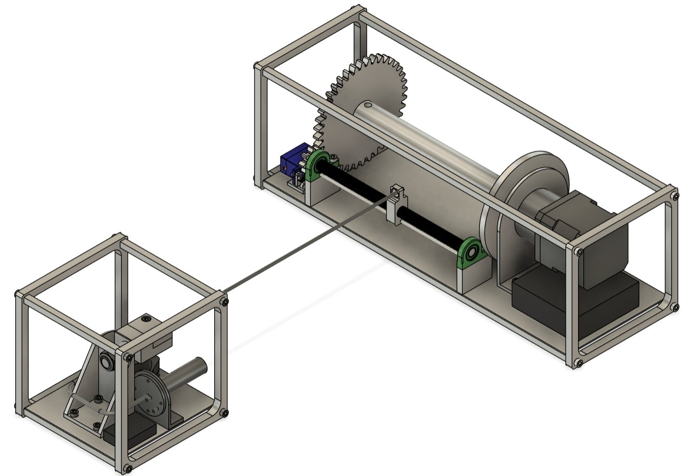
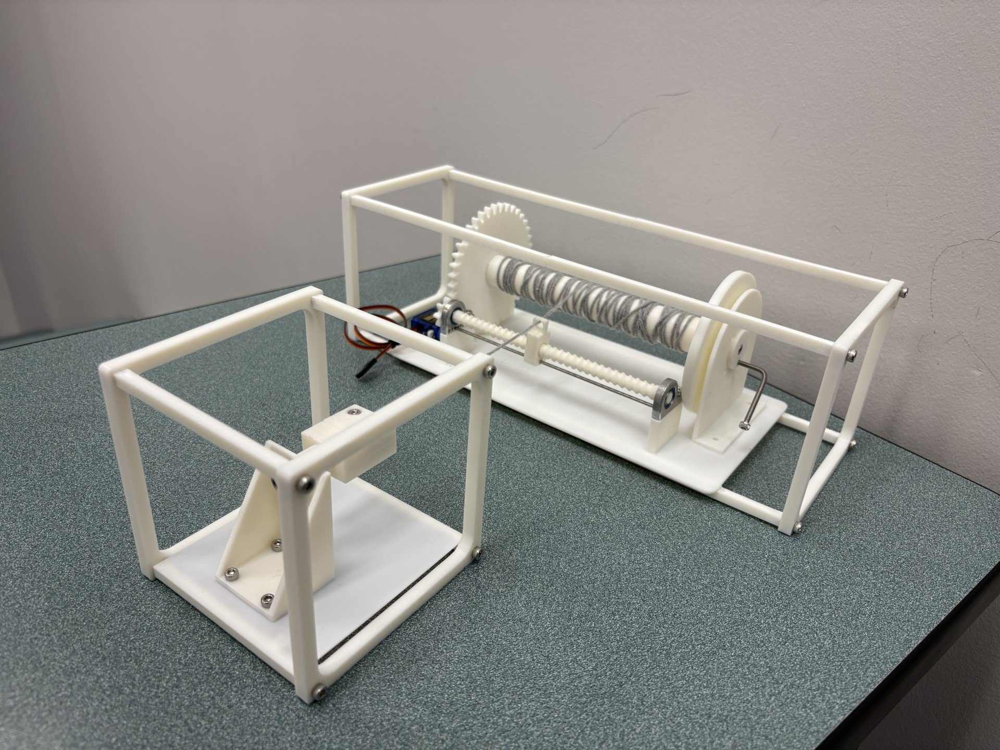
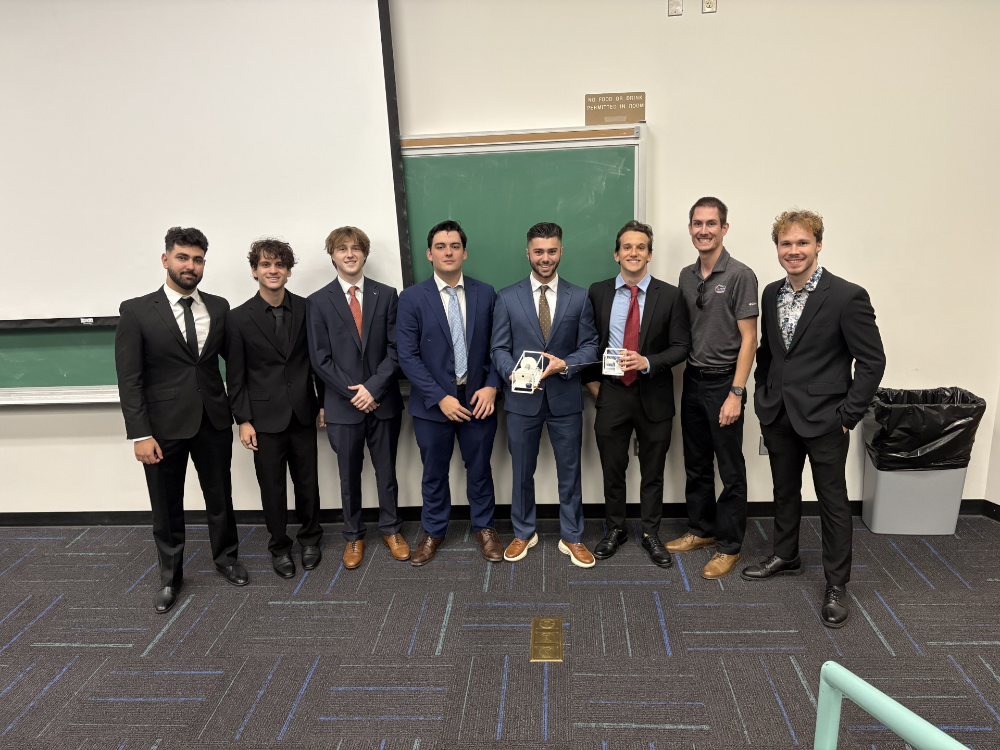

This was my senior capstone design project at the University of Florida, for which I served as team leader. Our team was tasked with designing and prototyping a tether system to connect two 12U satellites together, allowing them to rotate about their shared center of mass and generate artificial gravity. The project turned out to be a massive success, highlighting my competence as a leader and strengthening my desire to one day achieve a similar professional role.

My Role: Team Leader
As team leader of a group of nine engineers, I was responsible for scheduling and leading weekly meetings, overseeing major design decisions, checking in on each member's progress and providing guidance, and setting project timelines and deliverables.
Abstract
Spacecraft operating in Low Earth Orbit (LEO) face persistent challenges related to orientation control, microgravity disturbances, and the absence of standardized long-tether deployment mechanisms. Summanus Aerospace tasked the team with developing a compact tether system capable of connecting two 12U, 24 kg SmallSats so they may rotate about their shared center of mass and generate lunar or Martian gravity. The system must deploy 50 to 150 meters of tether wire, maintain stable tension, dissipate electrostatic charge, and operate autonomously for at least six months within the −40°C to +80°C LEO thermal environment, all while conforming to a 3U CubeSat volume.
The resulting design, the Talon Tether, is a fully integrated tether deployment and charge-management system built within separate 3U and 1U frames that integrate with the mother and daughter satellites, respectively. The 3U frame houses the mechanical deployment hardware, consisting of a precision reel subsystem and a synchronized level wind mechanism. The reel stores the tether on a motor-driven spool supported by a ball bearing for low-friction rotation and includes a servo-actuated mechanical lock that functions as an emergency brake. The level wind subsystem guides the wire across the spool using a gear-driven, bidirectional threaded rod, enabling dense and reliable packing within constrained volume.
The tether terminates within the 1U frame through a clamp-block attachment subsystem incorporating an inline load cell to provide continuous tension feedback. A xenon-fed electron emitter within the 1U frame dissipates accumulated charge and maintains electrical neutrality during operation. Aluminum 5056-H18 wire coated in Teflon FEP was selected for the tether due to its high strength-to-weight ratio, conductivity, and resistance to cold welding, atomic oxygen, and UV degradation. Together with a robust electronics architecture, these subsystems enable safe, controlled, and long-duration tether deployment, satisfying all mission requirements and providing a flight-ready solution for SmallSat tether operations.


Capstone Team C03 at the final design presentation — University of Florida, 2025